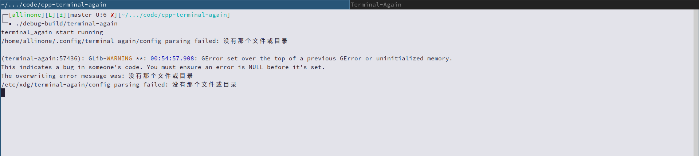

rust-most-use-cmd & 截图

项目地址: https://gitee.com/eeppee_admin/rust-most-use-cmd
最多出现项
- 用rust实现的收集一个文件最常出现的重复项,
并打印到终端上, 仅用作分析纯文本文件
go-fy & 截图

项目地址: https://gitee.com/eeppee_admin/go-fy
命令行翻译
- 支持指定翻译到的6大国际语言
- 使用常见的网页翻译api, 如搜狗, deepl, 百度翻译api
- 但是可用的api只有搜狗, deepl,
其他如谷歌api国内访问不到 - 使用goreleaser制作release包
cpp-plain-nes-emulator & 截图

项目地址: https://gitee.com/EEPPEE_admin/cpp-plain-nes-emulator
nes模拟器
- 个别游戏的.nes格式文件不支持
- 仅提供实现Windows端的
- 本项目为学习项目, 使用sfml库
cpp-terminal-again & 截图

项目地址: https://gitee.com/EEPPEE_admin/cpp-terminal-again
终端模拟器
- 为了重新实现termite
- 使用vte和gtk3库